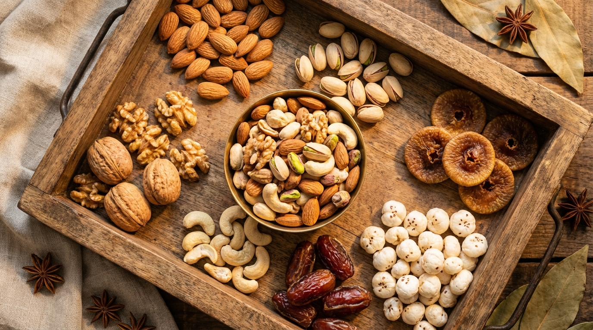

Every Indian diabetic has heard this from a well-meaning relative: "Just eat badam (almonds) and akhrot (walnuts) — they're healthy!"
But how many almonds? Are cashews safe? Will dates spike your blood sugar? Can you eat makhana freely? The advice is always vague, the internet is full of contradictions, and your doctor's "eat nuts in moderation" isn't exactly actionable.
This guide fixes that. We've pulled data from meta-analyses, clinical trials, and GI databases to give you exact numbers — glycemic index, portion sizes, carb counts, and practical recommendations for every dry fruit and nut available in Indian markets.
📋 What's Inside
- Why Nuts Are a Diabetic's Best Friend
- The Complete GI Table: Every Nut & Dry Fruit Ranked
- Top 7 Nuts for Diabetics (Ranked)
- Dry Fruits: The Safe vs. Risky List
- Makhana (Fox Nuts): India's Diabetes Superfood
- Exact Portion Guide: How Much Is Too Much?
- Smart Combinations That Lower Blood Sugar
- What to Avoid: Sugar-Coated Traps
- Best Time to Eat Dry Fruits for Diabetics
- 5 Quick Diabetic-Friendly Nut Snack Recipes
- Buying Guide: What to Look for in India
- FAQs
1. Why Nuts Are a Diabetic's Best Friend
Nuts are one of the few foods that tick every box for diabetes management. Here's why they deserve a permanent spot in your daily diet:
The Science in 60 Seconds
- Ultra-low glycemic index: Most nuts have a GI of 0-20 — essentially no blood sugar impact when eaten alone
- Blunt carb spikes: Adding nuts to a high-carb meal reduces the post-meal glucose spike by 20-30% (the "co-ingestion effect")
- Improve insulin sensitivity: A 2023 meta-analysis of 40 randomized trials found that 56g/day of tree nuts reduced fasting glucose by 2.7 mg/dL and HbA1c by 0.07%
- Heart protection: Diabetics have 2-4x higher cardiovascular risk. Nuts reduce LDL cholesterol by 3-19% and lower heart attack risk
- Slow digestion: High fiber + healthy fat = slow gastric emptying = gradual glucose absorption = flatter blood sugar curve
The bottom line: nuts aren't just "allowed" for diabetics — they're actively therapeutic. The question isn't whether to eat them, but which ones and how much.
2. The Complete GI Table: Every Nut & Dry Fruit Ranked
This is the reference table you'll keep coming back to. We've listed every common nut and dry fruit available in Indian markets with their glycemic index, glycemic load per typical serving, and a traffic-light safety rating.
Nuts
| Nut | GI | GL (per 30g) | Net Carbs (per 30g) | Verdict |
|---|---|---|---|---|
| 🥜 Peanuts | 7 | 0.5 | 4.5g | ✅ Excellent |
| 🌰 Almonds (Badam) | 0-15 | 0 | 2.7g | ✅ Excellent |
| 🥜 Walnuts (Akhrot) | 0-15 | 0 | 2.0g | ✅ Excellent |
| 🟢 Pistachios (Pista) | 15 | 1.3 | 5.1g | ✅ Excellent |
| 🟡 Cashews (Kaju) | 22 | 2.2 | 8.6g | ✅ Good (watch portions) |
| 🟢 Macadamia | 10 | 0.4 | 1.5g | ✅ Excellent |
| 🟢 Pecans | 10 | 0.4 | 1.2g | ✅ Excellent |
| 🟢 Brazil Nuts | 10 | 0.3 | 1.3g | ✅ Excellent |
Seeds (Bonus — Often Grouped with Nuts)
| Seed | GI | GL (per 30g) | Net Carbs (per 30g) | Verdict |
|---|---|---|---|---|
| Flaxseeds (Alsi) | 0 | 0 | 0.5g | ✅ Excellent |
| Chia Seeds | 1 | 0 | 1.7g | ✅ Excellent |
| Pumpkin Seeds | 10 | 0.5 | 1.3g | ✅ Excellent |
| Sunflower Seeds | 20 | 1.0 | 3.3g | ✅ Good |
Dried Fruits
| Dried Fruit | GI | GL (per 30g) | Net Carbs (per 30g) | Verdict |
|---|---|---|---|---|
| Makhana (Fox Nuts) | 25-30 | 4.5 | 18g | ✅ Excellent snack |
| Dried Apricots | 32 | 5.5 | 17g | ⚠️ Moderate — limit 3-4 pieces |
| Dried Figs (Anjeer) | 40 | 6.5 | 19g | ⚠️ Moderate — limit 2-3 pieces |
| Dates (Khajoor) | 42-55 | 7.5 | 20g | ⚠️ Moderate — limit 1-2 pieces |
| Prunes (Dried Plums) | 40 | 6.0 | 18g | ⚠️ Moderate — limit 3-4 pieces |
| Raisins (Kishmish) | 64 | 11 | 22g | 🔴 Caution — very easy to overeat |
| Dried Cranberries | 62 | 11.5 | 23g | 🔴 Usually has added sugar — avoid |
| Dried Mango | 73 | 14 | 22g | 🔴 Too high — avoid |
3. Top 7 Nuts for Diabetics (Ranked)
🥇 #1 — Almonds (Badam)
The king of diabetic nuts. Almonds have more clinical evidence behind them than any other nut for diabetes management.
- GI: 0-15 (practically zero blood sugar impact)
- Key nutrients: Magnesium (75mg/30g — 19% daily value), vitamin E, fiber (3.5g/30g), monounsaturated fats
- What research says: A 2023 meta-analysis of 15 RCTs found that almonds reduce fasting glucose by 5-7 mg/dL, HbA1c by 0.07%, and post-meal glucose spikes by up to 30% when co-ingested with carbs
- The magnesium connection: 25-38% of Type 2 diabetics are magnesium-deficient. Almonds are one of the best food sources — and magnesium directly improves insulin sensitivity
Daily dose: 20-23 almonds (28g) Soaked or raw — both work
🥈 #2 — Walnuts (Akhrot)
The brain-and-blood-sugar nut. Walnuts are the only tree nut with significant omega-3 fatty acids (ALA).
- GI: 0-15
- Key nutrients: Omega-3 ALA (2.5g/30g), polyphenols, antioxidants, melatonin
- What research says: Harvard's study of 34,000+ adults found walnut consumers had a 24% lower risk of Type 2 diabetes. Walnuts improve blood vessel function (endothelial function) — critical since cardiovascular disease is the #1 killer of diabetics
- Anti-inflammatory: Chronic low-grade inflammation drives insulin resistance. Walnuts' omega-3s + polyphenols are potent anti-inflammatory agents
Daily dose: 7-8 walnut halves (28g) Best eaten raw, not roasted
🥉 #3 — Pistachios (Pista)
The portion-control nut. Because you have to shell them, you naturally eat slower and less.
- GI: 15
- Key nutrients: Lutein, zeaxanthin (eye health — crucial for diabetics), fiber (3g/30g), vitamin B6
- What research says: A 12-week Spanish study found that prediabetics who ate 57g of pistachios daily had significantly lower fasting glucose, insulin, and insulin resistance (HOMA-IR) compared to controls. Pistachios also lowered inflammation markers
- Eye protection bonus: Diabetic retinopathy is a leading cause of blindness. Pistachios' lutein and zeaxanthin are specifically protective for eye health
Daily dose: 30-49 pistachios (28g) Choose unsalted, in-shell
#4 — Peanuts (Moongphali)
The affordable powerhouse. Technically a legume, but nutritionally performs like a nut — at 1/5th the price.
- GI: 7 (one of the lowest of all foods)
- Key nutrients: Protein (7.3g/30g — highest among common nuts), niacin, resveratrol
- What research says: The Shanghai Women's Health Study (75,000+ participants) found that peanut consumption was associated with a 13% lower risk of Type 2 diabetes. Peanuts are particularly good at blunting post-meal spikes when eaten with rice or roti
- India-specific advantage: At ₹100-150/kg, peanuts deliver the same diabetes benefits as almonds at a fraction of the cost
Daily dose: 30-40 peanuts (28g) Roasted unsalted or boiled
#5 — Cashews (Kaju)
The misunderstood nut. Many diabetics avoid cashews thinking they're "too sweet." The data tells a different story.
- GI: 22 (still solidly low)
- Key nutrients: Copper, magnesium (83mg/30g), zinc, iron
- What research says: A 2019 systematic review found that cashew consumption had no negative effect on blood glucose, insulin, or HbA1c. In fact, cashews improved the HDL-to-LDL ratio. The "cashews are bad for diabetics" myth has no scientific basis
- Caveat: Cashews have slightly more carbs (8.6g/30g) than almonds (2.7g). Stick to 15-18 cashews, not handfuls
Daily dose: 15-18 cashews (28g) Plain roasted, no sugar/masala coating
#6 — Pecans
The hidden gem. Less common in India but increasingly available online and in gourmet stores.
- GI: 10
- Key nutrients: Highest antioxidant content among all tree nuts, monounsaturated fats, thiamin
- What research says: A Tufts University study found that eating pecans daily for 4 weeks improved insulin sensitivity and reduced cardiometabolic risk markers in overweight adults
Daily dose: 15-19 pecan halves (28g)
#7 — Brazil Nuts
The selenium superstar. Just 1-2 nuts provide your entire daily selenium requirement.
- GI: 10
- Key nutrients: Selenium (544μg per nut — 989% daily value!), healthy fats, magnesium
- What research says: Selenium plays a role in thyroid function and antioxidant defense. Diabetics with thyroid issues (common comorbidity in India — see our guide) benefit particularly
- Warning: Do NOT eat more than 3-4 per day — selenium toxicity is real
Daily dose: 1-3 brazil nuts only
4. Dry Fruits: The Safe vs. Risky List
Dried fruits are where diabetics need to be more careful. Unlike nuts (which are mostly fat and protein), dried fruits are concentrated sources of natural sugar — sometimes containing 3-5x the sugar of the fresh fruit by weight.
That doesn't mean all dried fruits are off-limits. Here's the breakdown:
✅ Safe (with portion control)
- Dates (1-2 pieces): GI 42-55. Medjool dates are higher GI than Deglet Noor. Always pair with almonds or walnuts — the fat slows sugar absorption. Great pre-workout energy source
- Dried Apricots (3-4 pieces): GI 32. Rich in potassium and iron. Good fiber-to-sugar ratio. Choose the dark orange (sulfur-free) variety when possible
- Prunes (3-4 pieces): GI 40. The sorbitol content actually slows glucose absorption. Also excellent for gut health (common issue for diabetics on metformin)
- Dried Figs/Anjeer (2-3 pieces): GI 40. High in calcium and fiber. Soak overnight and eat in the morning for better digestion
🔴 Risky (limit strictly or avoid)
- Raisins (Kishmish): GI 64. The biggest trap — they're small, sweet, and it's easy to eat 50g without realizing (that's 33g of sugar). If you eat them, count out 10-15 pieces max
- Dried Cranberries: Almost always have added sugar (check the label). Even "unsweetened" versions are concentrated. Avoid
- Dried Mango/Pineapple: GI 70+. Very high sugar, often with added sugar on top. Not suitable for diabetics
- Candied/Sugar-coated anything: This includes mukhwas mixes, sweet paan masala with dried fruit, and "trail mixes" with chocolate/yogurt coating. Hard no
5. Makhana (Fox Nuts): India's Diabetes Superfood
Makhana deserves its own section because it's uniquely Indian, highly underrated, and nearly perfect for diabetics.
Why Makhana Is Special
- Low GI (25-30): Comparable to nuts despite being a seed
- High protein (9.7g/100g): Better than most grains
- Low fat (0.1g/100g): Unlike nuts, makhana is naturally low-fat — ideal if you're watching calories
- Rich in kaempferol: A flavonoid with documented anti-diabetic, anti-inflammatory, and antioxidant properties
- Resistant starch: Some of makhana's starch acts like fiber — it resists digestion and feeds beneficial gut bacteria
- Traditionally Ayurvedic: Used for centuries in Indian medicine for "prameha" (diabetes)
Best Way to Eat Makhana for Diabetics
- Dry-roasted with minimal ghee: Heat ½ tsp ghee in a pan, add 2 cups makhana, roast on low heat for 5-7 min until crispy. Add salt, black pepper, and turmeric. ~100 calories per cup
- Makhana trail mix: Combine roasted makhana + 10 almonds + 5 peanuts. Perfect mid-morning snack
- Makhana raita: Crush lightly roasted makhana into fresh curd with cumin and mint. Low-carb, probiotic-rich
- Makhana kheer (sugar-free): Cook in low-fat milk with a pinch of saffron and stevia. Dessert craving solved
Daily dose: 1-2 cups roasted (30-60g) Widely available: ₹200-400/kg
6. Exact Portion Guide: How Much Is Too Much?
The #1 mistake diabetics make with nuts: eating too many because "they're healthy." Nuts are calorie-dense — 30g of almonds = 170 calories. Eat 100g mindlessly while watching TV and you've consumed 570 calories and potentially 25-30g of carbs.
| Item | Daily Portion | Visual Guide | Calories | Carbs |
|---|---|---|---|---|
| Almonds | 20-23 pieces (28g) | One cupped palm | 164 | 6g |
| Walnuts | 7-8 halves (28g) | One cupped palm | 185 | 4g |
| Pistachios | 30-49 pieces (28g) | One cupped palm | 159 | 8g |
| Cashews | 15-18 pieces (28g) | One cupped palm | 157 | 9g |
| Peanuts | 30-40 pieces (28g) | One cupped palm | 161 | 5g |
| Makhana (roasted) | 1-2 cups (30-60g) | Small bowl | 100-200 | 18-36g |
| Dates | 1-2 pieces (15-20g) | Thumb-sized | 40-55 | 11-15g |
| Dried Figs | 2-3 pieces (20g) | Two-three small figs | 50 | 13g |
| Raisins | 10-15 pieces (10g) | One tablespoon only | 30 | 7g |
7. Smart Combinations That Lower Blood Sugar
The real magic happens when you combine nuts strategically with other foods. These combinations are backed by clinical evidence:
🏆 The Top Combinations
- Almonds + Roti/Rice: Eating 9-10 almonds before or with a carb-heavy meal reduces the post-meal glucose spike by 20-30%. The fat and fiber in almonds slow gastric emptying, giving insulin more time to work.
- Walnuts + Oats/Dalia: Adding 4-5 walnut halves to your morning porridge adds omega-3s and lowers the meal's effective glycemic index by ~15 points.
- Dates + Almonds (1:3 ratio): The classic Indian combination. One date with 3 almonds gives you quick energy (from the date) with a controlled blood sugar response (from the almond fat). Perfect pre-workout.
- Makhana + Curd: Probiotic curd + low-GI makhana = a snack that feeds gut bacteria, provides protein, and barely moves your blood sugar.
- Peanuts + Sprouts: Mix a handful of roasted peanuts into moong sprouts with lemon and chaat masala. High protein, high fiber, GI under 30. The perfect diabetic chaat.
- Mixed Nuts + Green Tea: The catechins in green tea enhance the insulin-sensitizing effects of nut consumption. A cup of green tea + a handful of mixed nuts is arguably the best mid-afternoon snack a diabetic can have.
8. What to Avoid: Sugar-Coated Traps
The Indian dry fruit market is full of products that look healthy but will wreck your blood sugar:
- Sugar-coated almonds/cashews (Diwali gift boxes): The sugar coating can add 15-20g of sugar per 30g serving — more than a chocolate bar
- Honey-roasted nuts: "Honey" sounds healthy but it's just sugar. These often have 3x the carbs of plain nuts
- Chocolate trail mixes: The chocolate chips/yogurt drops defeat the entire purpose
- Flavored/masala cashews from packets: Check the label — many contain maltodextrin (GI: 85-105) as a flavor carrier
- "Diabetic-friendly" nut mixes: Marketing gimmick. These sometimes contain dried fruit in ratios that spike blood sugar. Make your own mix instead
- Sweet paan masala with dried fruit: Contains refined sugar, artificial sweeteners, and processed dried fruit. Not a health food
9. Best Time to Eat Dry Fruits for Diabetics
Timing matters. Your body's insulin sensitivity changes throughout the day, and strategic timing can maximize the benefits:
✅ Best Times
| Time | What to Eat | Why |
|---|---|---|
| Mid-morning (10-11 AM) | Mixed nuts (almonds + walnuts + pista) | Prevents pre-lunch blood sugar dip. Insulin sensitivity is highest in the morning |
| Before meals (15-20 min) | 8-10 almonds | "Preload" effect — reduces the glycemic impact of the upcoming meal by 20-30% |
| With breakfast | Nuts in oats/dalia/curd | Lowers the effective GI of your breakfast. Keeps you full until lunch |
| Pre-workout (30 min before) | 1 date + 5 almonds | Quick energy without a huge spike. The date sugar is used for exercise |
| Afternoon snack (3-5 PM) | Roasted makhana or trail mix | Replaces biscuits/namkeen. Prevents the 4 PM energy crash and evening overeating |
⚠️ Avoid
- Large portions after 8 PM: Insulin sensitivity drops in the evening. A big handful of trail mix at night is metabolized worse than the same portion at 10 AM
- Dried fruits on empty stomach: Especially dates and raisins — the sugar hits fast without anything to slow absorption
- Right before bed: The calories are more likely to be stored as fat, and the digestion can disrupt sleep quality
10. 5 Quick Diabetic-Friendly Nut Snack Recipes
1. Power Trail Mix (Store in a jar for the week)
- 1 cup raw almonds
- ½ cup walnut halves
- ½ cup roasted peanuts (unsalted)
- ¼ cup pumpkin seeds
- 2 tbsp flaxseeds
Mix and store. Daily portion = 30g (about 3 tablespoons). GI: ~10. Carbs: 4g per portion.
2. Masala Makhana Crunch
- 2 cups makhana
- ½ tsp ghee
- ¼ tsp turmeric, ¼ tsp black pepper, ¼ tsp chaat masala, pinch of salt
Dry-roast makhana in ghee 5-7 min. Add spices. Cool. Calories: ~110 per cup. Net carbs: 18g.
3. Almond-Flax Energy Balls (No Sugar)
- 1 cup almond flour
- 2 tbsp ground flaxseeds
- 2 tbsp unsweetened peanut butter
- 1 tbsp cocoa powder
- Stevia to taste
- 1-2 tbsp water to bind
Mix, roll into 10 balls, refrigerate. Each ball: ~70 cal, 2g net carbs. Perfect post-lunch sweet craving killer.
4. Walnut-Curd Bowl
- 1 cup plain curd (not flavored)
- 5 walnut halves, crushed
- 5 almonds, sliced
- 1 tsp chia seeds
- Pinch of cinnamon
Mix and eat. High protein, probiotic, omega-3 rich. GI: ~20. Makes a complete breakfast.
5. Peanut-Sprout Chaat
- 1 cup boiled moong sprouts
- ¼ cup roasted peanuts
- ½ tomato, diced
- ½ onion, diced
- Lemon juice, chaat masala, green chutney
Toss everything together. High protein (12g+), high fiber, GI under 30. The diabetic's street food.
11. Buying Guide: What to Look for in India
Where to Buy
- Best value: Local wholesale markets (Crawford Market in Mumbai, Khari Baoli in Delhi, Russell Market in Bangalore) — 30-50% cheaper than branded
- Best convenience: Amazon, BigBasket, Nutraj, Happilo on Amazon/Flipkart
- Best quality: Nutraj, Rostaa, Happilo for consistent quality. Farmley for organic options
Price Guide (March 2026)
| Item | Approx. Price (per kg) | Monthly Cost (28g/day) |
|---|---|---|
| Almonds (California) | ₹800-1,200 | ₹670-1,000 |
| Walnuts (Kashmir) | ₹800-1,400 | ₹670-1,170 |
| Pistachios | ₹1,200-1,800 | ₹1,000-1,500 |
| Cashews | ₹700-1,100 | ₹585-920 |
| Peanuts | ₹100-180 | ₹84-150 |
| Makhana | ₹400-700 | ₹335-585 |
What to Check on Labels
- ✅ Ingredients should list ONLY the nut — nothing else
- ✅ "Raw" or "dry roasted" — not "oil roasted"
- ✅ "Unsalted" or "no added salt"
- ❌ Avoid anything with "sugar," "maltodextrin," "glucose syrup," or "honey" in ingredients
- ❌ Avoid "flavored" or "masala" variants — they almost always have hidden carbs
12. Frequently Asked Questions
Can diabetics eat dry fruits and nuts?
Absolutely yes. Most nuts (almonds, walnuts, pistachios, peanuts) have a GI under 20 and actively improve blood sugar control. Dried fruits need more caution — stick to small portions and always pair with nuts. A daily handful of mixed nuts is one of the strongest evidence-backed dietary recommendations for diabetics.
How many almonds can a diabetic eat per day?
20-23 almonds (28g) per day is the research-backed sweet spot. Meta-analyses show this amount reduces fasting glucose by 5-7 mg/dL. Soaked or raw — both work equally well for blood sugar. Even 10-12 almonds daily provides meaningful benefits if you're watching calories.
Are dates safe for diabetics?
In moderation, yes. Dates have a GI of 42-55 — lower than white bread (75) or white rice (72). Limit to 1-2 dates per day, always paired with nuts. The worst thing you can do is eat 5-6 dates on an empty stomach — that's 50+ grams of sugar hitting your bloodstream fast.
Is makhana good for diabetics?
Makhana is excellent — one of the best snacks available for Indian diabetics. Low GI (25-30), high protein, and contains kaempferol (an anti-diabetic flavonoid). Dry-roast it with minimal ghee and spices for a guilt-free snack. You can safely eat 1-2 cups daily.
Which dry fruits should diabetics avoid?
Avoid: sugar-coated nuts, dried cranberries (usually have added sugar), dried mango (GI 73+), and large portions of raisins (GI 64, easy to overeat). Any "candied" or "honey-roasted" variant is off-limits regardless of the base nut or fruit.
What's the best time to eat nuts for blood sugar control?
The most impactful time is 15-20 minutes before a carb-heavy meal (the "preload" effect). Mid-morning (10-11 AM) is also excellent because insulin sensitivity is highest then. Avoid large portions after 8 PM when insulin sensitivity is lowest.
Are cashews bad for diabetics?
No — this is a myth. Cashews have a GI of 22, are rich in magnesium, and studies show no negative effect on blood glucose or HbA1c. They have slightly more carbs than almonds, so keep portions to 15-18 pieces (28g). The fear around cashews is unfounded.
Can I eat peanut butter if I'm diabetic?
Yes, but choose the right kind. Buy peanut butter with ONE ingredient: peanuts. Brands like MyFitness (unsweetened), Pintola (all-natural), or Alpino have sugar-free options. Avoid Skippy, Jif, or any brand with added sugar, palm oil, or hydrogenated fat. 1-2 tablespoons daily is a healthy portion.
🥜 Start Your Nut Habit Today
A daily handful of nuts costs less than a cup of chai — and it's one of the most powerful things you can do for your blood sugar. Track how your body responds with our free tools.
Track Your Blood Sugar Free →The Bottom Line
Nuts and dry fruits aren't just "allowed" for diabetics — the right ones, in the right amounts, are actively therapeutic. The research is overwhelming: a daily handful of mixed nuts (almonds, walnuts, pistachios, peanuts) reduces fasting glucose, improves HbA1c, protects your heart, and even lowers your risk of diabetic complications.
The rules are simple:
- Nuts = green light. Almonds, walnuts, pistachios, peanuts, cashews — all excellent. Stick to 28-30g/day
- Makhana = Indian superfood. Low GI, high protein, dirt cheap. Make it your go-to snack
- Dried fruits = yellow light. Dates, figs, apricots are fine in small portions (1-3 pieces). Always pair with nuts
- Sugar-coated anything = red light. Read the back label, not the front
- Pre-portion. The single most important practical tip. Measure once, eat right all week
The cheapest option — peanuts + makhana — costs under ₹500/month and delivers 90% of the benefit. There is no financial excuse for not doing this.
Share this guide with a diabetic family member — especially the ones who think all dry fruits are automatically healthy.